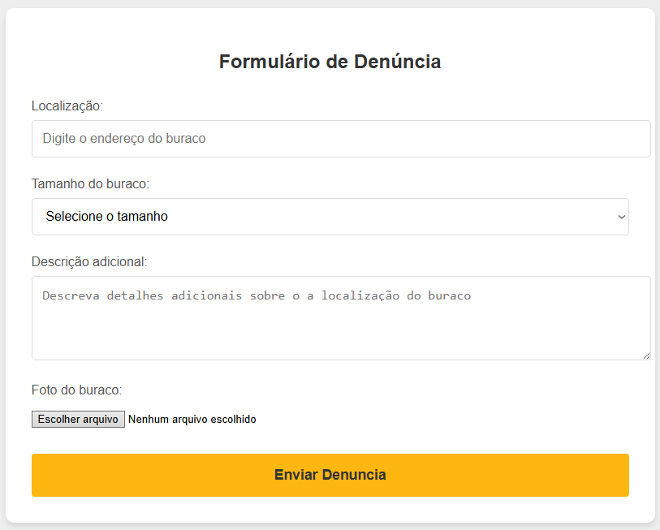

Ajude a melhorar sua cidade!
Denuncie buracos nas ruas e ajude a prefeitura a agir mais rápido.
E como funciona?

tire uma foto do buraco

Envie a foto através do formulario

A prefeitura ser notificada

Com a sua denuncia o bura será tampado
Um exemplo para ajudar :

Localização: Informe a rua ou avenida onde está o buraco.
Tamanho: Inforamção sobre o tamanho aproximado do buraco da denuncia.
Descrição adicional: Adicione mais detalhes, como números de casas ou estabelecimentos perto do buraco
Foto do buraco: Faça upload da imagem do buraco para ajudar na denuncia, essa imagen deve apresentar a localização gps de enta esta o buraco, caso não tenha nçao sera possivel terinar a denuncia.